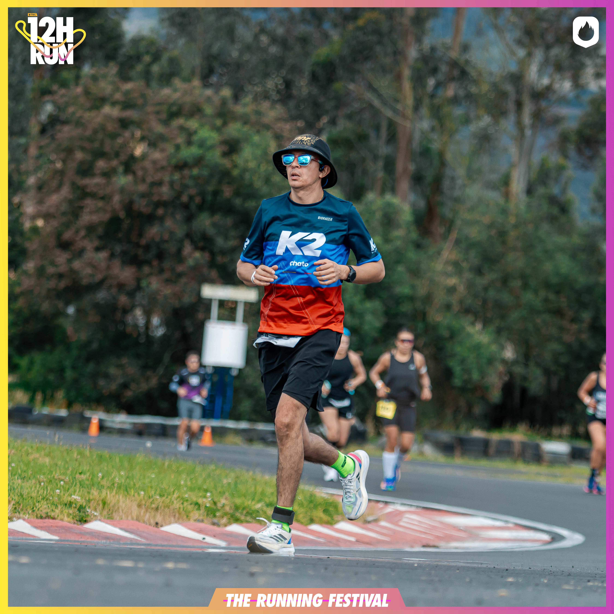
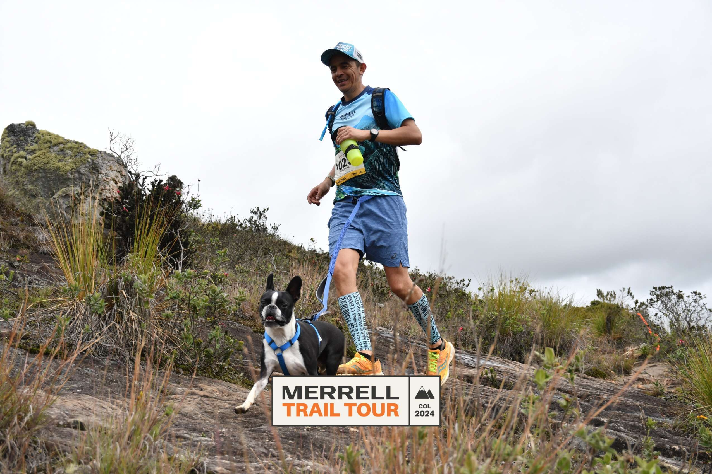

Transformación digital
Automatización, IA y mejora continua orientadas a resultados de negocio.
Bogotá, Colombia · Tecnología y transformación
Lidero equipos, servicios e iniciativas digitales que convierten la complejidad en valor para el negocio.
Conocer mi perfil ↓Soy líder de tecnología y transformación digital con más de 17 años de experiencia en los sectores de tecnología, energía y seguros. Mi trabajo consiste en conectar prioridades de negocio, equipos y tecnología para lograr resultados que se puedan medir.
Me especializo en hiperautomatización, inteligencia artificial, RPA, Microsoft Power Platform y optimización de procesos. Disfruto construir equipos sólidos, desarrollar talento y hacer que la innovación se traduzca en una mejor operación.
Una mirada integral para llevar las iniciativas desde la estrategia hasta la operación.
Automatización, IA y mejora continua orientadas a resultados de negocio.
Estabilidad operativa, niveles de servicio y experiencia de usuarios.
Equipos multidisciplinarios alineados, comprometidos y en crecimiento.
Priorización, proveedores, indicadores y control de entrega de punta a punta.
MBA y profesional en Ingeniería de Sistemas, con experiencia liderando proyectos y servicios en Colombia, el Caribe y Latinoamérica.
Service Lead Sr
Project Team Lead
Líder Marco, Fábrica Digital de Hiperautomatización
Consultoría, emprendimiento, preventa e ingeniería de software
Disciplina que trasciende
Fuera del trabajo soy un hombre de familia, triatleta y maratonista aficionado. Encuentro en el deporte una práctica constante de disciplina, enfoque y resiliencia.
Valoro el tiempo de calidad, los desafíos que exigen preparación y el aprendizaje continuo. Son convicciones que también llevo a cada equipo y proyecto.



Conectemos